营务 · 原画与短片评审
返回游戏 · 规则与验收说明
16幅新增原画
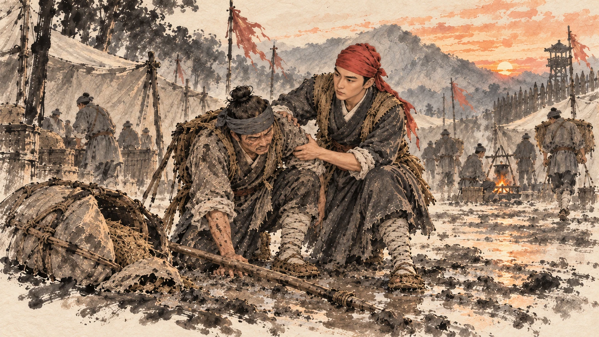
军士｜腿一软，担子险些落了地。
fatigue-slip · steps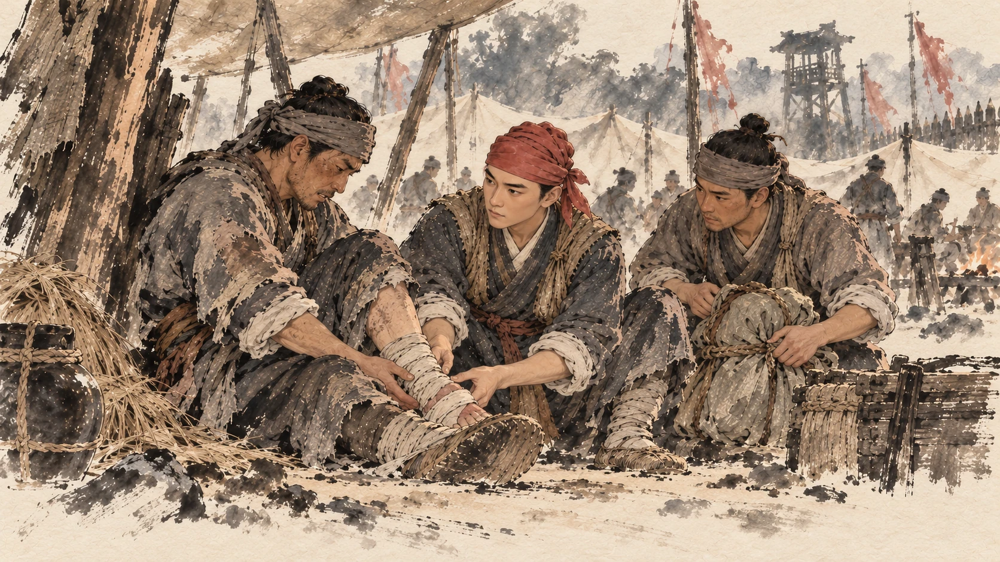
朱重八｜先看清伤势，不可硬撑。
fatigue-assess · wrap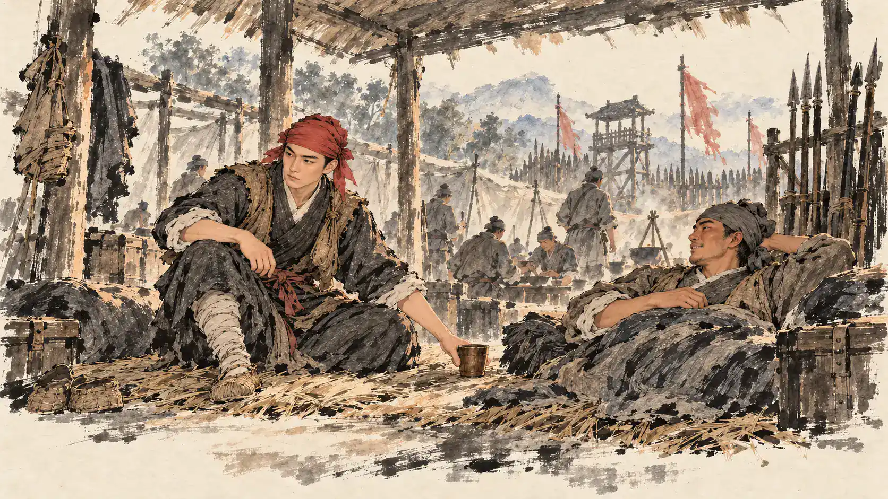
朱重八｜歇够这一阵，再接着走。
fatigue-rest · bowl朱重八｜换肩接力，步子放稳。
fatigue-rotate · rope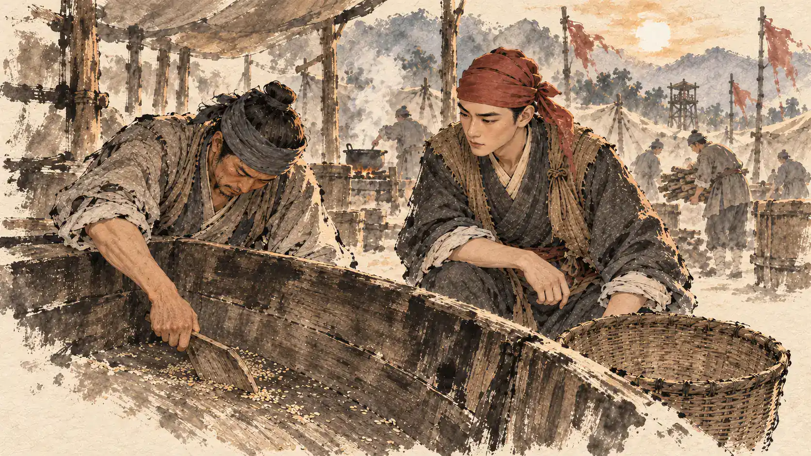
伙夫｜照这个用法，余粮撑不久了。
grain-empty · wood朱重八｜先点余粮，再算要用几日。
grain-check · paper仓吏｜按准数支领，领去便要记账。
grain-draw · cloth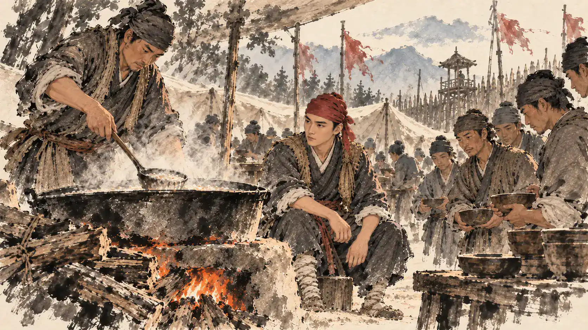
朱重八｜先顾眼前，收工之后再筹粮。
grain-porridge · bowl军士｜握柄裂了，这杆不能再用。
equipment-crack · wood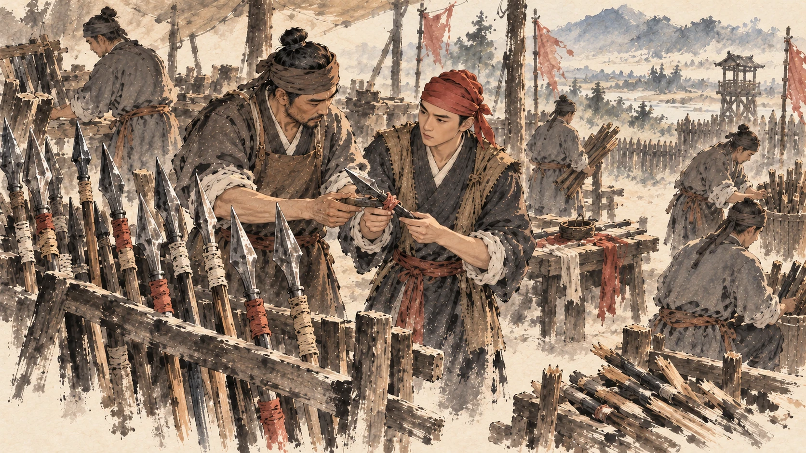
朱重八｜好的坏的，分开放，逐件查。
equipment-count · wood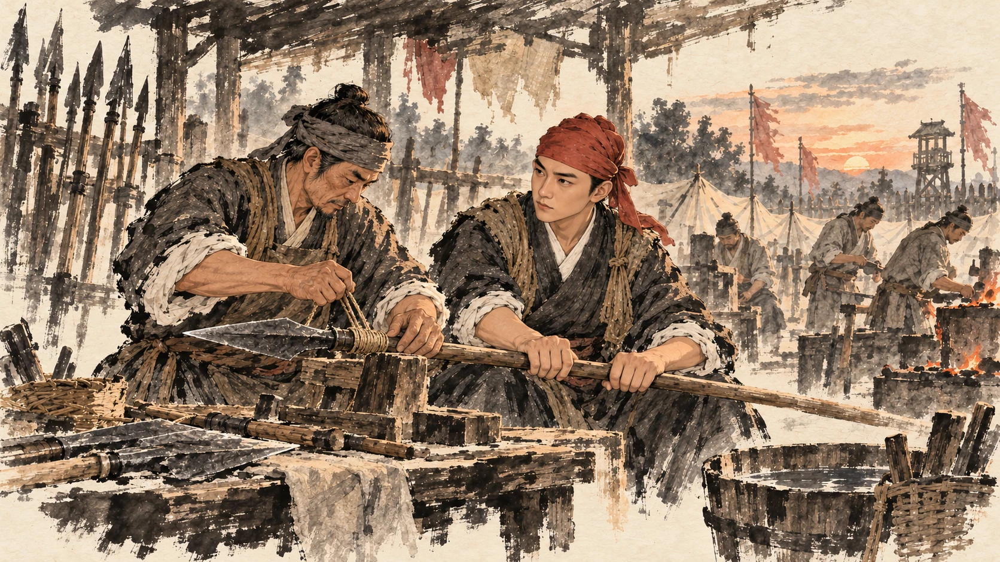
匠人｜旧铁还可用，换柄再缠紧。
equipment-mend · rope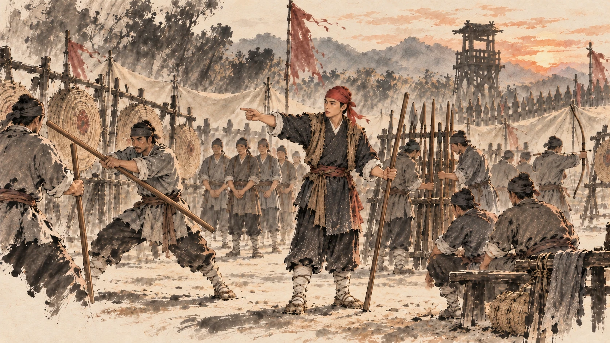
朱重八｜分组轮练，坏兵器先停用。
equipment-pair · steps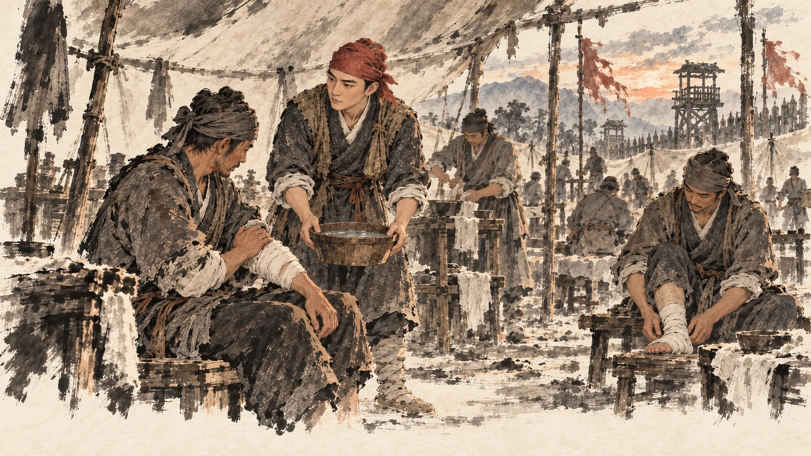
军士｜伤处还疼，跟队已经吃力。
medical-line · bowl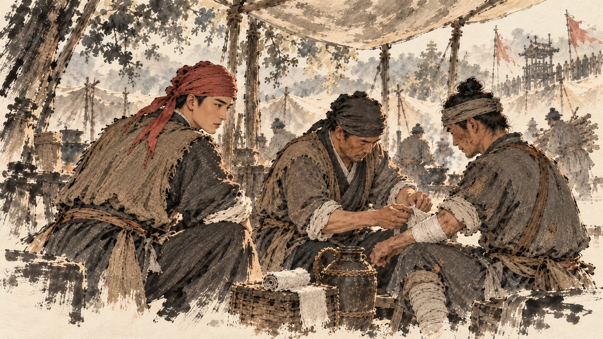
朱重八｜先分轻重，不把伤员当作好兵算。
medical-assess · wrap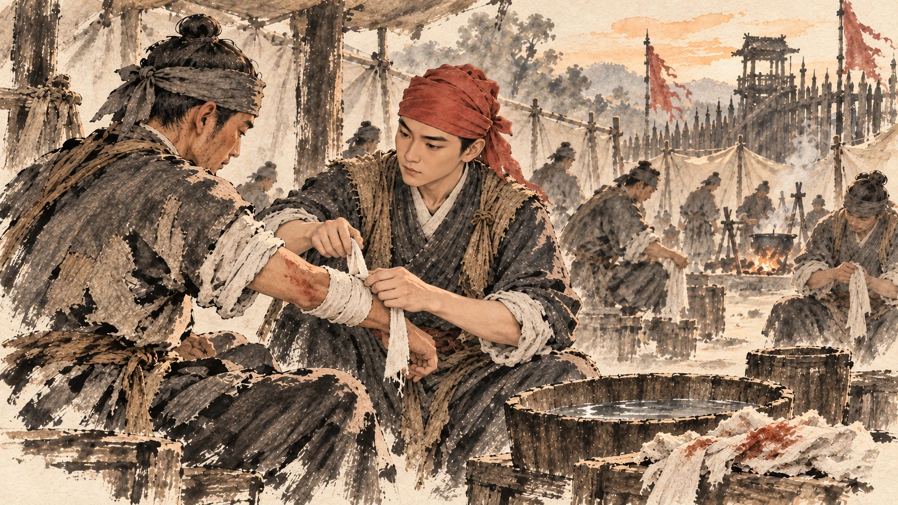
照护者｜布要省着用，伤处不能不管。
medical-bandage · wrap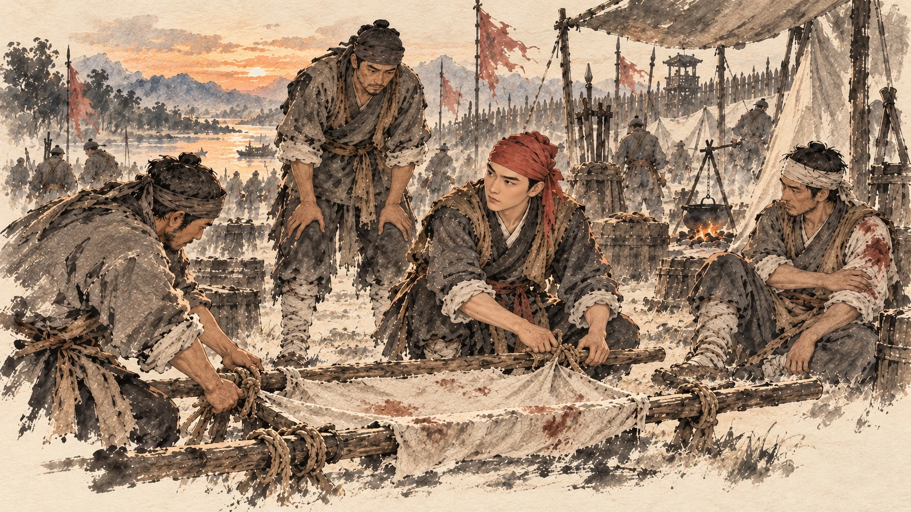
朱重八｜扎好担架，轮换着抬。
medical-carry · rope16段营务短片
risk-fatigue-rest · 14.0秒 · 4幅独立构图care-fatigue-rest · 14.2秒 · 4幅独立构图risk-fatigue-rotate · 14.0秒 · 4幅独立构图care-fatigue-rotate · 14.2秒 · 4幅独立构图risk-grain-supply · 14.6秒 · 4幅独立构图care-grain-supply · 14.6秒 · 4幅独立构图risk-grain-ration · 14.6秒 · 4幅独立构图care-grain-ration · 14.6秒 · 4幅独立构图risk-equipment-repair · 14.5秒 · 4幅独立构图care-equipment-repair · 14.9秒 · 4幅独立构图risk-equipment-pair · 14.5秒 · 4幅独立构图care-equipment-pair · 14.9秒 · 4幅独立构图risk-medical-treat · 15.6秒 · 4幅独立构图care-medical-treat · 15.8秒 · 4幅独立构图risk-medical-carry · 15.3秒 · 4幅独立构图care-medical-carry · 15.5秒 · 4幅独立构图